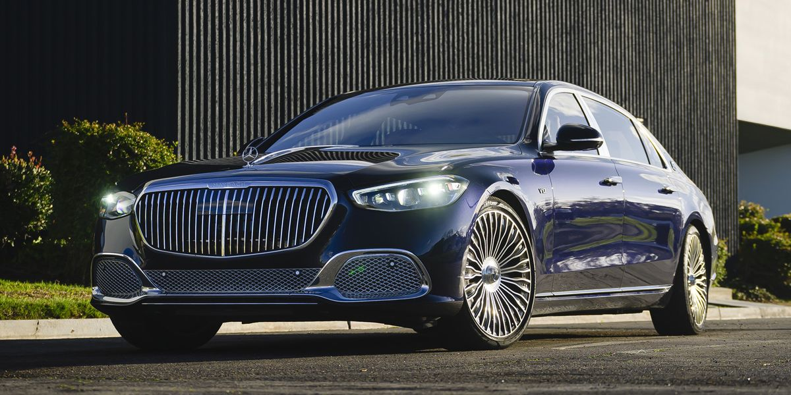
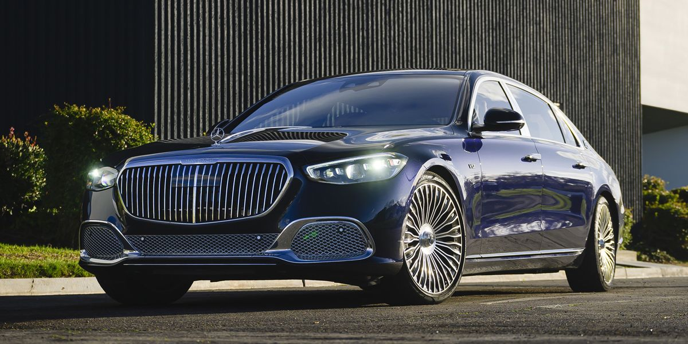

About us

About us

Mercedes-Maybach S-Klasse "Maybach by Virgil Abloh” S 680 As inspired by the "Project MAYBACH", Mercedes-Benz introduced the Mercedes-Maybach S-Klasse "Maybach by Virgil Abloh” S 680 that interpreted the style, fashion, material, and design directions set by Virgil Abloh and Gorden Wagener for their "Project MAYBACH" Show Car. The special edition honours Virgil Abloh who passed away in 2021 from cancer. Only 152 were produced, and 39 were sold in the United States to artists, celebrities, and other influential individuals. Alicia Keys was the first person to receive an S-Klasse „Maybach by Virgil Abloh” S 680, as a gift from her husband Swizz Beatz. It has 2-tone paint with a top in obsidian black and a tan bottom with tan wheels. The interior has sand-colored Nappa leather accented by black trim on the doors, center console, and steering wheel. Customers also got a 1/18-scale replica of the car inside a custom-made wooden box wrapped in tan Nappa leather, along with a special car cover with the Maybach and Abloh logo. Rick Ross was offered an S 680 but declined.